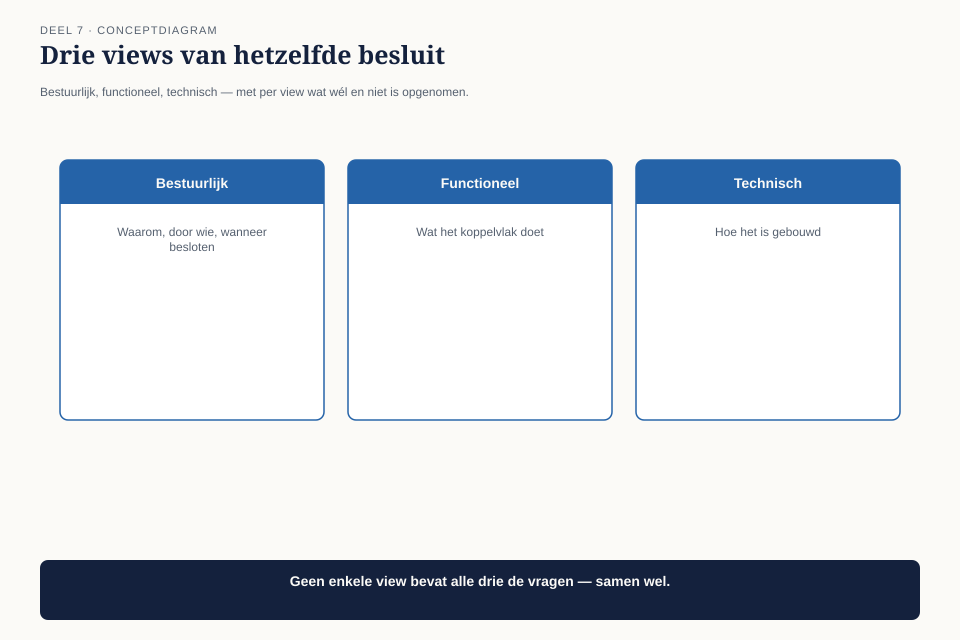
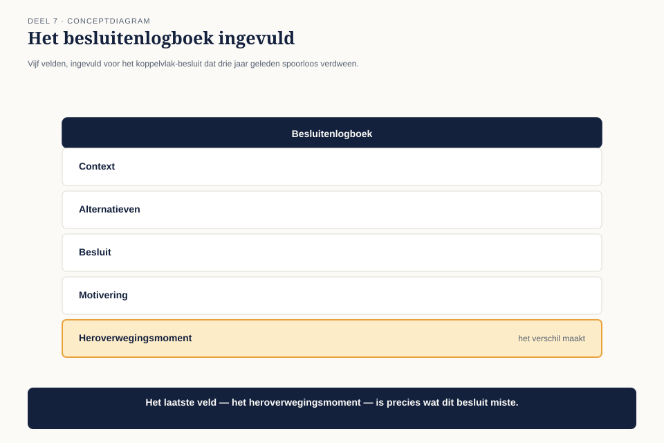
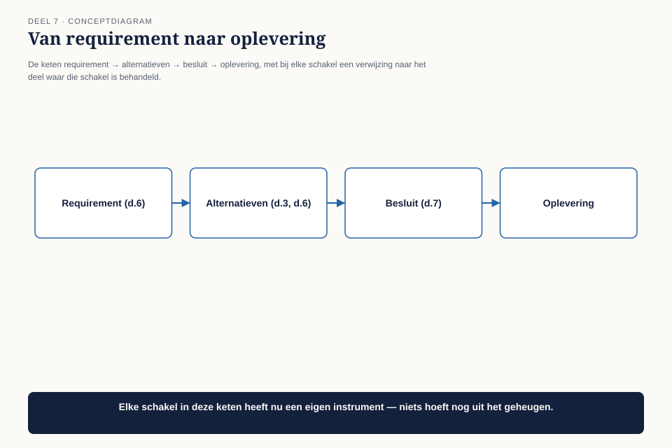

Deel 7 — Design II: architectuurbeschrijving en besluitvorming
Niveau 1 — De kern | Deelnemersreader BTABoK-cursus, Ductus
7.1 Waar dit deel over gaat
Claudette heeft in deel 6 een goed afgebakend ontwerp: één requirement, een scopediagram met drie lagen, een decompositie langs veranderreden. Dit deel voegt het laatste stuk toe dat een ontwerp tot een architectuurbeschrijving maakt: vastleggen wat je hebt gekozen, voor wie, en waarom — op een manier die over twee jaar nog te volgen is.
Dit is de plek waar we teruggaan naar het assessmentgesprek uit deel 1. Bart’s zesde observatie ging niet over Claudette specifiek — hij ging over Meridiaan als geheel. Dit deel is het enige in dit niveau waarin de fout niet van de hoofdpersoon is, maar van de organisatie waarin ze werkt.
Aan het eind van dit deel kun je:
- een architectuurbeschrijving opstellen die aansluit op verschillende soorten lezers via views en viewpoints;
- een besluit vastleggen op een manier die de overwogen alternatieven bewaart, niet alleen de uitkomst;
- traceerbaarheid door de levenscyclus toepassen: van requirement naar besluit naar oplevering;
- uitleggen waarom het ontbreken van besluitvorming een organisatieprobleem is en geen individueel verzuim.
7.2 Het archief dat er niet is
Claudette krijgt een vraag van een nieuwe collega die met een aanpalend systeem werkt: waarom is drie jaar geleden gekozen voor puntsgewijze integratie tussen de polis- en de uitkeringsadministratie, in plaats van een tussenlaag die alle koppelingen bundelt? Het is precies het koppelvlak uit deel 2 en 3 — de bron van het herstelwerk waar de hele casus om draait.
Ze zoekt het op. Er is geen document. Er is geen notulen-item. De twee mensen die er destijds bij waren, zijn allebei vertrokken. Wat overblijft is een vage herinnering van een collega: “Ik dacht dat het met tijdsdruk te maken had, maar ik weet het niet zeker.”

Dit is niet uniek voor dit koppelvlak. Claudette gaat drie jaar aan technische besluiten na en vindt hetzelfde patroon: architectuurdiagrammen zonder toelichting, code zonder commit-berichten die iets verklaren, en geen enkel spoor van welke alternatieven ooit zijn overwogen en waarom ze zijn afgevallen.
Dit is observatie O6: van geen enkel belangrijk technisch besluit van de afgelopen drie jaar is vastgelegd waarom het genomen is en welke alternatieven zijn afgewogen.
7.3 Waarom dit gebeurt — de link met deel 4
In deel 4 constateerde een groep bij opdracht 4 vaak dat hun organisatie een afrekenende cultuur heeft: fouten leiden tot een zoektocht naar een schuldige, niet naar een oorzaak. Dat inzicht verklaart nu iets concreets.
Als vastleggen een spoor achterlaat, en dat spoor kan later tegen je gebruikt worden, dan is niet-vastleggen een rationele bescherming — niet luiheid. Niemand bij Meridiaan heeft ooit besloten “we leggen geen besluiten vast.” Het ontbreken van een archief is het opgetelde resultaat van honderden individuele, begrijpelijke keuzes om een lastig compromis niet op papier te zetten.
Dit maakt O6 anders dan de voorgaande zes observaties. O1 tot en met O5 waren dingen die Claudette kon veranderen door zelf anders te handelen. O6 is een leegte die het hele systeem heeft laten ontstaan, en die je niet oplost door harder je best te doen — je lost hem op door een gewoonte in te voeren die sterker is dan de angst om vast te leggen.
7.4 Architectuurbeschrijving: voor wie schrijf je het op?
De BoK behandelt architecture description als kerncompetentie binnen Design, nauw verbonden met views and viewpoints. Het uitgangspunt is hetzelfde als bij de omgekeerde piramide uit deel 5, maar dan toegepast op een architectuurdocument in plaats van op een voorstel: verschillende lezers hebben verschillende vragen, en één document dat iedereen wil bedienen, bedient niemand goed.
Een view is de weergave van het systeem voor een specifieke groep lezers. Een viewpoint is de afspraak over hoe die weergave eruitziet — welke elementen erin staan, welke notatie, welk detailniveau.

| View | Voor wie | Wat erin staat | Wat níet |
|---|---|---|---|
| Bestuurlijk | directie, opdrachtgever | het besluit, de kosten, het risico bij niet-besluiten | technische termen, broncode, notatie |
| Functioneel | proceseigenaren, business-analisten | wat er verandert in het gedrag van het systeem, voor wie | implementatiedetails |
| Technisch | ontwikkelaars, andere architecten | de daadwerkelijke opzet, interfaces, afhankelijkheden | bestuurlijke overwegingen |
Dit is geen bureaucratische verplichting om drie keer hetzelfde te schrijven. Het is dezelfde beslissing, drie keer verteld voor het publiek dat er iets mee moet — precies zoals Claudette in deel 5 leerde haar document te herschrijven voor de lezer in plaats van voor zichzelf.
Veelgemaakte fout: één technisch document schrijven en het “ook” naar de directie sturen. Dat is geen bestuurlijke view — het is een technisch document met een verkeerd geadresseerde envelop. De toets is dezelfde als in deel 5: knip de eerste alinea eraf. Als hij vol technische termen staat, is het geen bestuurlijke view.
7.5 Het besluitenlogboek
Voor het vastleggen van besluiten zelf gebruiken we een vaste, korte vorm — bewust kort, want een besluitenlogboek dat te veel kost om bij te houden, wordt niet bijgehouden.

| Veld | Inhoud | Bij het koppelvlak (gereconstrueerd, drie jaar te laat) |
|---|---|---|
| Context | wat speelde er, wat maakte een besluit nodig? | twee systemen moesten razendsnel gekoppeld worden vóór een deadline |
| Overwogen alternatieven | welke opties lagen er, kort per stuk | (1) puntsgewijze integratie (2) een tussenlaag (3) uitstel tot na de deadline |
| Besluit | wat is gekozen, in één zin | puntsgewijze integratie, met het voornemen dit later te vervangen |
| Motivering | waarom deze en niet de andere? | tijdsdruk; de tussenlaag zou de deadline niet hebben gehaald |
| Wat zou dit besluit heroverwegen? | onder welke omstandigheid moet dit terugkomen op de agenda? | zodra het aantal koppelvlakken door hetzelfde patroon een bepaalde drempel overschrijdt |
Het laatste veld is het veld dat het verschil maakt tussen een archief en een kerkhof. Zonder dat veld leg je vast wat er ooit is besloten; mét dat veld leg je vast wanneer het de moeite waard is om terug te komen — en dat is precies wat er bij het koppelvlak had moeten gebeuren, ruim voordat het herstelwerk begon te lopen.
Vergelijk dit met de eis-wens-beperking-toets uit deel 3 en de waarom-toets uit deel 6. Alle drie zijn korte, herhaalbare vormen die een oordeel dwingen om zijn eigen redenering zichtbaar te maken. Het besluitenlogboek doet hetzelfde, maar dan achteraf navolgbaar in plaats van vooraf toetsbaar.
7.6 Traceerbaarheid door de levenscyclus
De laatste competentie in dit deel verbindt alles wat in deel 3, 6 en dit deel is behandeld tot één keten: van requirement, via besluit, naar oplevering — zodanig dat je op elk moment terug kunt naar de vraag “waarom bestaat dit precies zo?”

| Schakel | Vraag die beantwoord moet blijven | Waar behandeld |
|---|---|---|
| Requirement | wat moest dit bereiken, in de taal van de gebruiker? | deel 6 |
| Alternatieven | welke opties zijn overwogen, en met welke bandbreedte gewaardeerd? | deel 3, deel 6 |
| Besluit | wat is gekozen, en waarom deze en niet de andere? | dit deel |
| Oplevering | doet het resultaat wat de requirement vroeg? | buiten dit niveau, komt terug in niveau 2 |
Zonder deze keten kun je een vraag als die van de nieuwe collega niet beantwoorden — niet omdat niemand het meer weet, maar omdat er nooit een spoor is gelegd dat je kunt terugvolgen. Traceerbaarheid is geen document; het is een eigenschap van hoe de andere documenten aan elkaar hangen.
7.7 Wat Claudette nu doet
Ze kan het besluit van drie jaar geleden niet meer volledig reconstrueren — de mensen zijn weg, het geheugen is onbetrouwbaar. Wat ze wel kan doen, is twee dingen.
Ten eerste: het huidige besluit vastleggen, zoals ze het in deel 6 heeft afgebakend. Ze vult het besluitenlogboek in voor de simulatievoorziening, inclusief het vijfde veld — wanneer dit besluit heroverwogen moet worden.
Ten tweede: ze stelt voor het besluitenlogboek als vaste stap in te voeren, niet als aparte administratieve taak maar als onderdeel van hetzelfde moment waarop een besluit al wordt genomen. Geen apart proces, geen extra vergadering — vijf velden, ingevuld op het moment zelf, door wie het besluit neemt.
Ze reconstrueert ook, voor zover mogelijk, het koppelvlak-besluit met de informatie die nog wel beschikbaar is — niet om de schuldvraag te beantwoorden (dat is precies de valkuil uit deel 4) maar om het vijfde veld alsnog in te vullen: onder welke omstandigheid moet dit teruggkomen op de agenda? Dat antwoord ligt er inmiddels al: nu.
7.8 Observatie O6 gesloten
Van geen enkel belangrijk technisch besluit van de afgelopen drie jaar is vastgelegd waarom het genomen is en welke alternatieven zijn afgewogen.
Dit is de eerste observatie die niet wordt gesloten door Claudette anders te laten handelen in een enkele situatie, maar door een gewoonte in te voeren die groter is dan zijzelf. Drie dingen zijn veranderd:
Er is een vaste, korte vorm voor besluitvorming — het besluitenlogboek, vijf velden, ingevuld op het moment van beslissen, niet achteraf.
De vorm bewaart alternatieven, niet alleen de uitkomst — zodat een toekomstige collega niet hoeft te gissen wat er destijds is overwogen.
De vorm dwingt tot het benoemen van een heroverwegingsmoment — zodat een besluit dat “tijdelijk” was, niet stilzwijgend permanent wordt, zoals bij het koppelvlak gebeurde.
Met Design nu behandeld — deel 6 en 7 samen — resteert in niveau 1 nog één pijler: Quality Attributes. In deel 8 gaat het over observatie O7, de kwaliteitseisen die pas in productie boven water komen. Dat is de laatste losse observatie voordat deel 9 (IT Environment) en deel 10 (de capstone waarin alle zeven worden verdedigd) volgen.
7.9 Kernbegrippen
| Begrip | Betekenis in deze cursus |
|---|---|
| View / viewpoint | een view is de weergave voor een specifieke lezersgroep; een viewpoint is de afspraak hoe die weergave eruitziet |
| Besluitenlogboek | vaste vorm van vijf velden: context, alternatieven, besluit, motivering, heroverwegingsmoment |
| Traceerbaarheid door de levenscyclus | de keten requirement → alternatieven → besluit → oplevering blijft terug te volgen |
| Niet-vastleggen als rationele bescherming | in een afrekenende cultuur is het ontbreken van een spoor geen luiheid maar zelfbescherming — de link met deel 4 |
Volgende deel: deel 8 — Quality Attributes. Beschikbaarheid, beveiliging en beheersbaarheid komen bij Meridiaan pas in productie boven water. Dat wordt observatie O7.